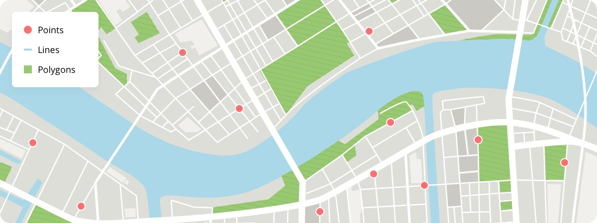
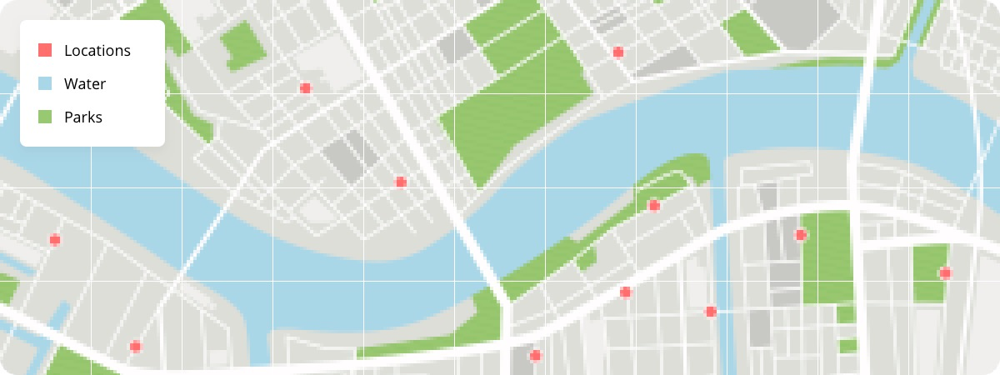

1. GIS Concepts
Data types, file formats, projections, software, and tools.
Introduction
What is GIS?
Why Learn GIS?
Spatial Data Types
How the surface of the Earth is represented digitally.
- Spatial coordinates = X, Y, sometimes Z
- Types of spatial data models (types)
- Vector
- Raster
- Networks
- Many file formats / extensions for each
- Examples: .tiff, .shp, .gdb
Vector
Represents space as points, lines, and polygons.
- Points – single vertex
- Lines – two or more vertices
- Polygon – three or more vertices with the last vertex equal to the first

Common Vector Data Types:
Raster
Represents space as a grid of pixels or cells.

Common Raster Data Types:
Data Type Considerations
Raster is faster, but vector seems more correcter.
Spatial data files do their best to represent the world. Accuracy needs will depend on each use case. Mapping an entire state vs. a single forest stand. Each sensor and GPS receiver will vary.
Raster Advantages:
Raster Disadvantages:
Vector Advantages:
Vector Disadvantages:
Projections (CRS)
Representing a 3D sphere on a 2D surface
- Often the most confusing part of introductory GIS
- No perfect projection exists (prioritize for needs)
- Different regions and states have their own projections
- Many software have on-the-fly projection
- Layers need to have same CRS for spatial operations
CRS Nomenclature
- English Name
- WKT ~ Well Known Text
- EPSG
- PROJ.4
Software & Programs
Many different types and levels of GIS software available. See more examples here.
Proprietary
- ArcGIS Pro
- Cadcorp
- MAPublisher
- Carto
Open-Source
- QGIS
- GRASS GIS
- SAGA GIS
- GeoDa
- R / Python / Julia
Other Web GIS Tools
- ArcGIS Online
- Google Earth Engine
- Leaflet
- Mapbox
- Mango Map
- Felt
Mobile Applications
Many apps available for field data collection.
- Esri Field Maps – ArcGIS Online – ArcGIS Pro
- QField or Mergin Maps – QGIS
- Avenza Maps – Works with multiple programs
Spatial Operations
Clip, union, intersect, re-project, dissolve.
Types of Maps
Choropleth
Data need to be normalized! Animals per unit area (density)